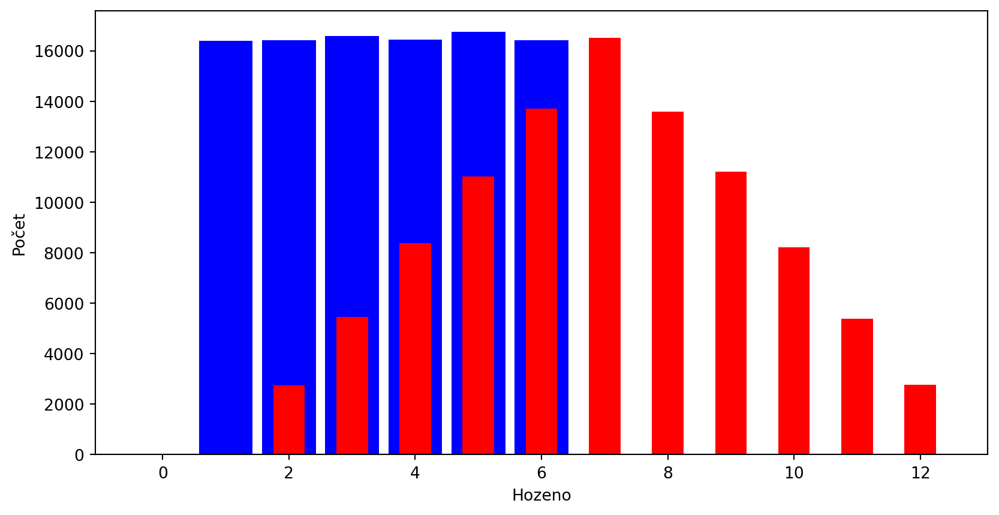
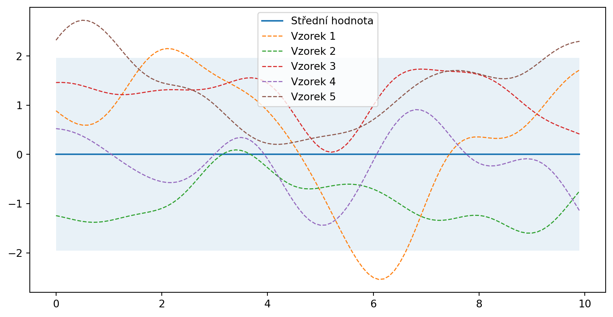
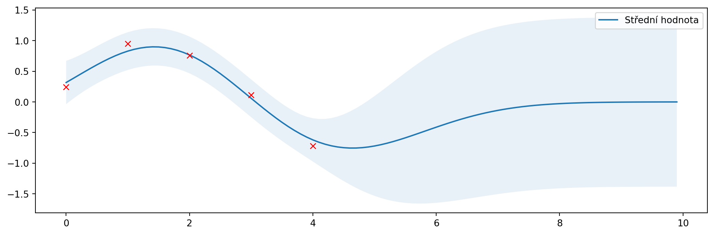
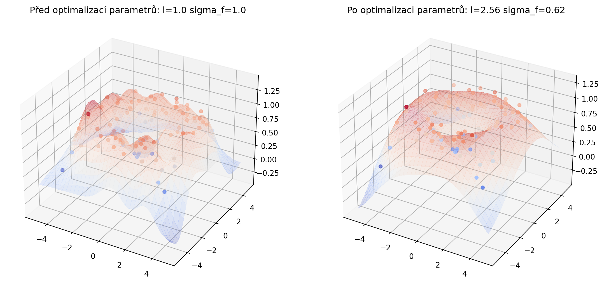
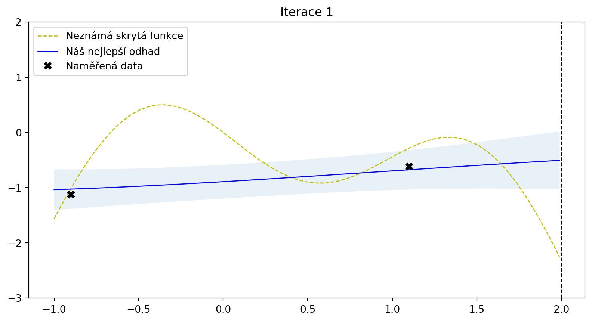
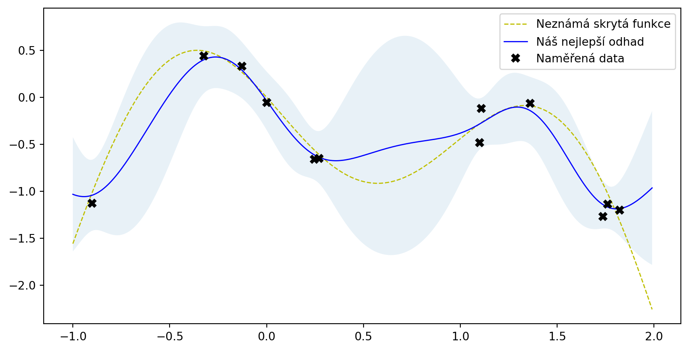

Optimalizujeme život matfyzáka: Od hledání lanýžů po neuronové sítě
2024-02-15
Připojte se
Co chceme?
Najít maximum neznámé funkce.
Co nás čeká?
Programování
Matematika
Nakonci trocha fyziky
Google Colab
- cloudový stroj pro vaše výpočty
- vše funguje v prohlížeči
- colab.research.google.com
- ~ 12 GB RAM, ~ 100GB space, ~2x CPU
- grafická jádra
Vyzkoušejte!
- Nový sešit
Statistika v kostce
Funkce
- krabička co dělá
x -> y - \[ y = e^{-x} \cos(2\pi x) \]
Náhodná veličina
- Má střední hodnotu
- Má nějaké rozložení výsledků
Náhodná veličina
def hazej(n, dices = 1):
rolls = []
for _ in range(n):
dice = 0
for _ in range(dices):
dice += np.random.randint(1, 7)
rolls.append(dice)
return rolls
# Simulujeme 1 kostku
data = hazej(99000, 1)
plt.hist(data, bins=np.arange(14) - 0.5,
color='blue', rwidth=0.85)
# dvě kostky
data = hazej(99000, 2)
plt.hist(data, bins=np.arange(14) - 0.5,
color='red', rwidth=0.5)
plt.xlabel('Hozeno')
plt.ylabel('Počet')
plt.show()
Náhodný proces
- obecnější náhodná veličina
- výsledek je funkce
Gaussovské procesy
Gaussovský proces
- model náhodného procesu
- hodnoty jsou náhodné proměné, vzájemně korelované
- popisuje ho střední hodnota a jádro
- jádro definuje vztah (
korelaci) mezi každými dvěma body výsledné funkce
Cíl:
- pro dva blízké body \(x_j\) a \(x_i\) platí, že jejich \(f(x_n)\) jsou také blízké
Příklad jádra
RBF (Radial Basis Function, jádro exponentu kvadratického) \[ \kappa(\mathbf{x}_i,\mathbf{x}_j) = \sigma^2 \exp\left(-\frac{\|\mathbf{x}_i - \mathbf{x}_j\|^2}{2l^2}\right) \]
kde \(l\) ovlivňuje jak rychle korelace klesá a \(\sigma\) určuje škálování jádra.
Vsuvka - pomocné funkce
Stáhneme si na google pomocné funkce:
Importujeme je, abychom je mohli používat:
Jak ten proces vypadá?
X = np.arange(0, 10, 0.1).reshape(-1, 1) #počet sloupců dopočítá
mu = np.zeros(X.shape) # střední hodnota
cov = kernel(X, X) # spočtu jádro
# Vygeneruji 5 funkcí jako výsledek náhodného gaussovského procesu
samples = np.random.multivariate_normal(mu.ravel(), cov, 5)
# Vše nám nakresli
plot_gp(mu, cov, X, samples=samples)
Co když známe nějaká data?
from numpy.linalg import inv
def posterior(X, X_train, Y_train, l=1.0, sigma=1.0, sigma_y=1e-8):
"""
Spočítá novou střední hodnotu a kovarianci při znalosti nějakých bodů
Argumenty:
X: osa x
X_train, Y_train: známá data (m x 1)
l, sigma: Parametry jádra
sigma_y: šum
Výsledek:
Nová střední hodnota a kovariance.
"""
K = kernel(X_train, X_train, l, sigma) + sigma_y**2 * np.eye(len(X_train)) # jádro s šumem
K_s = kernel(X_train, X, l, sigma)
K_ss = kernel(X, X, l, sigma) + 1e-8 * np.eye(len(X))
mu_s = K_s.T.dot(inv(K)).dot(Y_train)
cov_s = K_ss - K_s.T.dot(inv(K)).dot(K_s)
return mu_s, cov_sZadáme data (bez šumu)
# Zadáme data
X_train = np.array([1, 3, 4]).reshape(-1, 1)
Y_train = np.sin(X_train)
# Spočteme novou (posterior) střední hodnotu a kovarianci
mu_s, cov_s = posterior(X, X_train, Y_train)
samples = np.random.multivariate_normal(mu_s.ravel(), cov_s, 3)
plot_gp(mu_s, cov_s, X, X_train=X_train, Y_train=Y_train, samples=samples)
To není dokonalé - ta data nejsou z principu přesná.
Zadáme data (se šumem)
# Zašuměná data
noise = 0.2
X_train = np.arange(0, 5, 1).reshape(-1, 1)
Y_train = np.sin(X_train) + noise * np.random.randn(*X_train.shape)
mu_s, cov_s = posterior(X, X_train, Y_train, sigma_y=noise)
samples = np.random.multivariate_normal(mu_s.ravel(), cov_s, 3)
plot_gp(mu_s, cov_s, X, X_train=X_train, Y_train=Y_train, samples=samples)
Fajn, jak nastavit ty parametry?
Vliv parametrů
Ukaž kód
import matplotlib.pyplot as plt
params = [
(0.3, 1.0, 0.2),
(3.0, 1.0, 0.2),
(1.0, 0.3, 0.2),
(1.0, 3.0, 0.2),
(1.0, 1.0, 0.05),
(1.0, 1.0, 1.5),
]
plt.figure(figsize=(13, 2.5))
for i, (l, sigma, sigma_y) in enumerate(params):
mu_s, cov_s = posterior(X, X_train, Y_train, l=l,
sigma=sigma,
sigma_y=sigma_y)
plt.subplot(2, 3, i + 1)
plt.subplots_adjust(top=2)
plt.title(f'l = {l}, sigma = {sigma}, sigma_y = {sigma_y}')
plot_gp(mu_s, cov_s, X, X_train=X_train, Y_train=Y_train)Optimální parametry
Lze nalézt optimální parametry
\[ \log p(\mathbf{y} \lvert \mathbf{X}) = \log \mathcal{N}(\mathbf{y} \lvert \mathbf{0},\mathbf{K}_y) = -\frac{1}{2} \mathbf{y}^T \mathbf{K}_y^{-1} \mathbf{y} -\frac{1}{2} \log \begin{vmatrix}\mathbf{K}_y\end{vmatrix} -\frac{N}{2} \log(2\pi) \]
Kód zde
from numpy.linalg import cholesky, det
from scipy.linalg import solve_triangular
from scipy.optimize import minimize
def nll_fn(X_train, Y_train, noise):
"""
Vrací funkci která spočítá rovnici výše.
Argumenty:
X_train: tréninková data (m x d).
Y_train: tréninkové hodnoty (m x 1).
noise: známý šum u hodnot
"""
Y_train = Y_train.ravel()
def nll_naive(theta):
# Jednoduchá implementace výše uvedené funkce
K = kernel(X_train, X_train, l=theta[0], sigma=theta[1]) + \
noise**2 * np.eye(len(X_train))
return 0.5 * np.log(det(K)) + \
0.5 * Y_train.dot(inv(K).dot(Y_train)) + \
0.5 * len(X_train) * np.log(2*np.pi)
return nll_naive
# Minimalizujeme tu logaritmickou funkci vzhledem k parametrům l a sigma_f.
res = minimize(nll_fn(X_train, Y_train, noise), [1, 1],
bounds=((1e-5, None), (1e-5, None)),
method='L-BFGS-B')
# Uložíme výsledek
l_opt, sigma_f_opt = res.x
# Zobrazení výsledku
mu_s, cov_s = posterior(X, X_train, Y_train, l=l_opt, sigma=sigma_f_opt, sigma_y=noise)
plt.figure(figsize=(13, 4))
plot_gp(mu_s, cov_s, X, X_train=X_train, Y_train=Y_train)
Více rozměrů
Kód zde
from helper import plot_gp_2D
noise_2D = 0.1
rx, ry = np.arange(-5, 5, 0.3), np.arange(-5, 5, 0.3)
gx, gy = np.meshgrid(rx, rx)
X_2D = np.c_[gx.ravel(), gy.ravel()]
X_2D_train = np.random.uniform(-4, 4, (100, 2))
Y_2D_train = np.sin(0.5 * np.linalg.norm(X_2D_train, axis=1)) + \
noise_2D * np.random.randn(len(X_2D_train))
plt.figure(figsize=(14,7))
mu_s, _ = posterior(X_2D, X_2D_train, Y_2D_train, sigma_y=noise_2D)
plot_gp_2D(gx, gy, mu_s, X_2D_train, Y_2D_train,
f'Před optimalizací parametrů: l={1.00} sigma_f={1.00}', 1)
res = minimize(nll_fn(X_2D_train, Y_2D_train, noise_2D), [1, 1],
bounds=((1e-5, None), (1e-5, None)),
method='L-BFGS-B')
mu_s, _ = posterior(X_2D, X_2D_train, Y_2D_train, *res.x, sigma_y=noise_2D)
plot_gp_2D(gx, gy, mu_s, X_2D_train, Y_2D_train,
f'Po optimalizaci parametrů: l={res.x[0]:.2f} sigma_f={res.x[1]:.2f}', 2)
Jsou na to knihovny
Scikit-learn
GaussianProcessRegressorvytváří posterior data (“fituje hodnoty”)- Připravená jádra
from sklearn.gaussian_process import GaussianProcessRegressor
from sklearn.gaussian_process.kernels import ConstantKernel, RBF
rbf = ConstantKernel(1.0) * RBF(length_scale=1.0)
gpr = GaussianProcessRegressor(kernel=rbf, alpha=noise**2)
# Použiju stará data
gpr.fit(X_train, Y_train)
# Výpočet posterior parametrů
mu_s, cov_s = gpr.predict(X, return_cov=True)
# Optimalizované parametry Gausse
l = gpr.kernel_.k2.get_params()['length_scale']
sigma = np.sqrt(gpr.kernel_.k1.get_params()['constant_value'])
plot_gp(mu_s, cov_s, X, X_train=X_train, Y_train=Y_train)Jsou na to knihovny
Bayesovská optimalizace
Co optimalizovat?
Funkce typu “black-box”
- neznáme jaká funkce to je
- měření v bodě –> zašuměná odpověď
Co když měření trvá dlouho?
- najít minimum za pomocí nejmenšího počtu měření
–> Bayesovská optimalizace! Potřebujeme:
- Náhradní (Surrogate) model (GP!!)
- Akviziční funkce - vymyslí na základě modelu, kde dále měřit
Akviziční funkce
- hledá kompromis mezi
- průzkumem (exploration) - měřit tam, kde nic nevíme
- vytěžováním (exploitation) - měřit tom, kde se odhaduje minimum/maximum
- existují různé druhy:
- “maximum probability of improvement” (MPI)
- “upper confidence bound” (UCB)
- “expected improvement” (EI)
Jak to v praxi funguje?
Kód zde
from scipy.stats import norm
bounds = np.array([[-1.0, 2.0]])
noise = 0.2
def f(X, noise=noise):
return -np.sin(3*X) - X**2 + 0.7*X + noise * np.random.randn(*X.shape)
X_init = np.array([[-0.9], [1.1]])
Y_init = f(X_init)
X = np.arange(bounds[:, 0], bounds[:, 1], 0.01).reshape(-1, 1)
Y = f(X,0)
def expected_improvement(X, X_sample, Y_sample, gpr, xi=0.01):
mu, sigma = gpr.predict(X, return_std=True)
mu_sample = gpr.predict(X_sample)
sigma = sigma.reshape(-1, 1)
mu_sample_opt = np.max(mu_sample)
with np.errstate(divide='warn'):
imp = mu - mu_sample_opt - xi
Z = imp / sigma
ei = imp * norm.cdf(Z) + sigma * norm.pdf(Z)
ei[sigma == 0.0] = 0.0
return ei
from scipy.optimize import minimize
def propose_location(acquisition, X_sample, Y_sample, gpr, bounds, n_restarts=25):
dim = X_sample.shape[1]
min_val = 1
min_x = None
def min_obj(X):
return -acquisition(X.reshape(-1, dim), X_sample, Y_sample, gpr).flatten()
for x0 in np.random.uniform(bounds[:, 0], bounds[:, 1], size=(n_restarts, dim)):
res = minimize(min_obj, x0=x0, bounds=bounds, method='L-BFGS-B')
if res.fun < min_val:
min_val = res.fun
min_x = res.x
return min_x.reshape(-1, 1)
from sklearn.gaussian_process import GaussianProcessRegressor
from sklearn.gaussian_process.kernels import ConstantKernel, Matern
from helper import plot_approximation, plot_acquisition
# Gaussian process with Matérn kernel as surrogate model
m52 = ConstantKernel(1.0) * Matern(length_scale=1.0, nu=2.5)
gpr = GaussianProcessRegressor(kernel=m52, alpha=noise**2)
# Initialize samples
X_sample = X_init
Y_sample = Y_init
# Number of iterations
i = 0
def step():
global X_sample, Y_sample
# Update Gaussian process with existing samples
gpr.fit(X_sample, Y_sample)
# Obtain next sampling point from the acquisition function (expected_improvement)
X_next = propose_location(expected_improvement, X_sample, Y_sample, gpr, bounds)
# Obtain next noisy sample from the objective function
Y_next = f(X_next, noise)
# Plot samples, surrogate function, noise-free objective and next sampling location
plot_approximation(gpr, X, Y, X_sample, Y_sample, X_next, show_legend=i==0)
plt.title(f'Iterace {i+1}')
# Add sample to previous samples
X_sample = np.vstack((X_sample, X_next))
Y_sample = np.vstack((Y_sample, Y_next))
plt.ylim(-3,2)
plt.show()
step()
Jak to v praxi funguje?
Jak to v praxi funguje?
Jak to v praxi funguje?
Jak to v praxi funguje?
Jak to v praxi funguje?
Jak to v praxi funguje?
Jak to v praxi funguje?
Jak to v praxi funguje?
Jak to v praxi funguje?
Jak to v praxi funguje?
Jak to v praxi funguje?
Použití Scikit-optimize
import numpy as np
from sklearn.base import clone
from skopt import gp_minimize
from skopt.learning import GaussianProcessRegressor
from skopt.learning.gaussian_process.kernels import ConstantKernel, Matern
from helper import plot_approximation, plot_acquisition
bounds = np.array([[-1.0, 2.0]])
noise = 0.2
def f(X, noise=noise):
return -np.sin(3*X) - X**2 + 0.7*X + noise * np.random.randn(*X.shape)
X_init = np.array([[-0.9], [1.1]])
Y_init = f(X_init)
# pro plotování:
X = np.arange(bounds[:, 0], bounds[:, 1], 0.01).reshape(-1, 1)
Y = f(X,0)
# Definice jádra
m52 = ConstantKernel(1.0) * Matern(length_scale=1.0, nu=2.5)
gpr = GaussianProcessRegressor(kernel=m52, alpha=noise**2)
r = gp_minimize(lambda x: -f(np.array(x))[0],
bounds.tolist(),
base_estimator=gpr,
acq_func='EI', # funkce expected improvement
xi=0.01, # preference exploitation-exploration
n_calls=10, # počet měření
x0=X_init.tolist(), # počáteční měření
y0=-Y_init.ravel())
# Fituj náš Gaussovský proces
gpr.fit(r.x_iters, -r.func_vals)
# Zobraz výsledky
plot_approximation(gpr, X, Y, r.x_iters, -r.func_vals, show_legend=True)Použití Scikit-optimize

Na co je to dobré?
- hledání lanýžů
- ropných vrtů
- průmysl (výrobní procesy)
- farmacie (optimální dávkování)
- A/B testování
Fyzika
Automatická příprava vzorků
Autonomous Research System (ARES)
Příprava jednostěnných uhlíkových nanotrubek pomocí chemické depozice (100 vzorků za den)
Automatické měření
Kde máme měřit?
Časové náročné měření
Je třeba vybrat kde je důležité měřit
Robotizace
Automatická charakterizace vzorků
- Uchopování
- Nalepování
- Uspořádávání